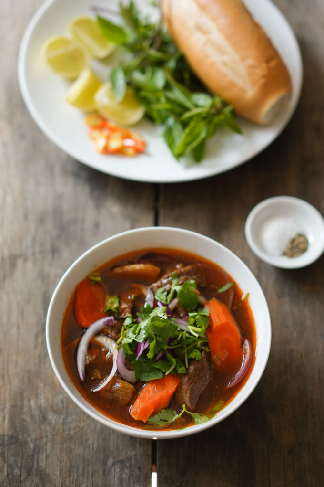

Vietnamese Beef Stew

Vietnamese bò kho (beef stew) is packed with tender, fall-apart braised
chunks of beef loaded with herbs, aromatics and a delicious broth that
will have you coming back with more Vietnamese baguette!
Similar to thịt kho, this slow braise / stew is easy to make, and the
longer you cook it the softer the meat gets. It’s an incredibly satisfying
meal very accessible to both Vietnamese and American folks. This recipe is
pretty hard to mess up in the kitchen.
This was one of the popular dishes at my mom’s old restaurant because of
its familiarity and accessibility, and something I had often there, in
between bottomless icy coconut drinks and fountain sodas.
INGREDIENTS
- 2 lb beef shank cut into 3/4
- water
- 1 tbsp salt
- 2 tbsp soy sauce
- 2 tbsp hoisin sauce
- 2 tbsp salt
- 1 tps Vietnamese beef stew seasoning
- 2 tbsp neutral cooking oil
- 4 cloves garlic roughly chopped
- 1 tbsp Vietnamese beef stew seasoning
- 1 medium onion quartered
- 1.5 tbs fresh ginger sliced or pounded
- 1-2 stalks lemon grass use ~7" of the aromatic root area, pounded
- 2 tbsp tomato paste
- 2 tbsp dark soy sauce
- 3-4 pods star anise
- 4-5 bay leaves
- 1 can chicken broth about 2 cups
- 6 oz coconut soda, Coke, or Sprite
- 5 cups filtered water or enough to barely cover the ingredients
- 2-3 carrots cut into 1" chunks
- 6 12" Vietnamese bread loaves
- 2 sliced jalapenos
- 1 sliced lemon
- salt and pepper
- 1 bunch Thai basil
INSTRUCTIONS
-
Clean the meat. Add beef to a large pot and add 1 tbsp salt and enough
tap water to barely cover the meat. Bring to a boil on high heat, and
once it hits a boil for 30 seconds, kill the heat, drain, and rinse
under running water to clean. If you haven't cut the meat into 3/4 – 1"
pieces yet, do it now.
-
Marinate the meat. Add all marinade ingredients to the meat in a covered
bowl or a bag for at least two hours, but overnight would be better.
-
Aromatics. Preheat a large pot on medium high. When hot, add the oil,
let it warm a bit, then add all the garlic and stir to slowly saute
until it turns light brown. Then add the paprika an stir until it
releases its aroma, about 30 seconds.
-
Broth. Add all broth ingredients to the pot except the carrots. Turn the
heat to high until it hits a boil, then reduce heat so it maintains a
low boil. Cook until the meat is as tender as you'd like it, about 60-90
minutes. Add carrots towards the final 10 minutes so it softens. Discard
the cooked onions and star anise pods.
-
Serve with accoutrement as shown: tearing fresh Thai basil onto your
plate, taking occasional bites of jalapeno, and dipping a few pieces of
meat into the salt / pepper / lemon juice side for variety.